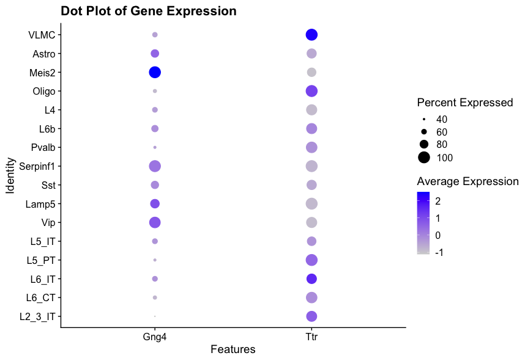
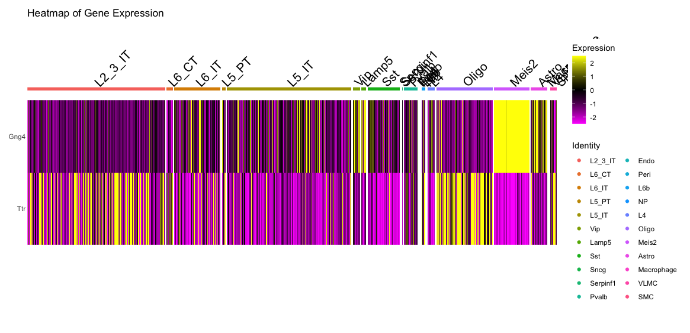

15 Visualisation of spatial transcriptomics data
- Visualise spatial transcriptomics data using Seurat
We have already seen some basic visualisations of spatial transcriptomics data using Seurat in previous chapters. In this chapter, we will explore their parameters and additional visualisation techniques to better understand the spatial organisation of gene expression in tissues.
15.1 Basic Visualisation with Seurat
Seurat provides several functions for visualising spatial transcriptomics data. The most commonly used function is SpatialFeaturePlot, which allows you to visualise the expression of specific genes across the spatial coordinates of the tissue. Another useful function is SpatialDimPlot, which can be used to visualise clusters or other metadata across the spatial coordinates. We have already loaded the library ggplot2 in previous chapters, which is helpful for customising plots, for example by adding titles.
# Visualise the expression of specific genes
SpatialFeaturePlot(visium, features = c("Gng4", "Ttr"), ncol = 2) +
ggtitle("Expression of Gng4 and Ttr")
# Visualise clusters across the spatial coordinates
SpatialDimPlot(visium, group.by = "Leiden_08", label = TRUE) +
ggtitle("Spatial Distribution of Clusters")The first plot shows the expression of the genes Gng4 and Ttr across the spatial coordinates of the tissue with an added title and the default colour scale.
{kind=link}
Gng4 is involved in G-protein signalling and is often expressed in neuronal tissues, especially the olfactory bulb and cortex, while Ttr (transthyretin) is a transport protein primarily found in the liver and choroid plexus of the brain, which has been shown to play a role in Alzheimer’s disease prevention by binding to amyloid-beta peptides.
The second plot shows the spatial distribution of clusters identified by the Leiden algorithm with labels and a title.
{kind=link}
You can customise the appearance of these plots using various parameters, such as changing the colour scale, adjusting point size, and modifying titles and labels.
# Customise colour scale and point size
SpatialFeaturePlot(visium, features = "Gng4", image.alpha = 0.5) +
ggtitle("Expression of Gng4 on image with 50% opacity")
FeaturePlot(
visium,
features = "Gng4",
cols = paletteer::paletteer_d("khroma::lapaz")
) +
ggtitle("Expression of Gng4 on UMAP")
# Visualise co-expression of two features simultaneously
FeaturePlot(visium, features = c("Gng4", "Ttr"), blend = TRUE)The first plot shows the expression of Gng4 again, but this time overlaid on the tissue image with only 50% opacity, making the histological image less prominent and the gene expression more visible.
{kind=link}
The second plot shows the expression of Gng4 on the UMAP embedding using a custom colour palette from the khroma package.
{kind=link}
The last plot shows the co-expression of Gng4 and Ttr on the UMAP projection simultaneously using a blended colour scheme, allowing us to see areas where both genes are expressed versus areas where only one gene is expressed. Unfortunately it is not possible to do this on spatial coordinates in Seurat at the moment.
{kind=link}
15.2 Interactive Visualisation with Seurat
Interactive visualisation in Seurat can be used to subset a dataset based on spatial location. This can help to select specific regions of interest within the tissue for further analysis. It saves the selected cells into the given variable, which can then be used to subset the Seurat object.
# Interactive selection of spots in the spatial plot
selected_cells <- InteractiveSpatialPlot(visium)The InteractiveSpatialPlot function opens an interactive window where you can select spots directly on the spatial plot using your mouse. After making your selection, the selected cell barcodes are saved into the selected_cells variable for further analysis. Additionally, you can zoom in and out of the plot manually or by selecting clusters that you want to focus on.
15.3 Additional Visualisation Techniques
Beyond the basic visualisation functions provided by Seurat, there are several additional packages that can enhance your ability to visualise and interpret spatial transcriptomics data. Some of these packages include ggplot2, cowplot, and patchwork for advanced plotting capabilities. We have already loaded ggplot2 in previous chapters, so we will use it here along with patchwork to create more complex visualisations. cowplot is another option for combining multiple plots into a single figure, but we will focus on patchwork here.
# Example of using ggplot2 and patchwork for custom visualisations
library(patchwork)
# Create a ridge plot of gene expression across spatial coordinates
ridge_plot <- RidgePlot(
visium,
features = c("Gng4", "Ttr"),
ncol = 1,
group.by = 'seurat_clusters'
)
# Create a violin plot of gene expression across clusters
violin_plot <- VlnPlot(
visium,
features = c("Gng4", "Ttr"),
ncol = 1,
group.by = 'seurat_clusters'
)
# Combine plots using patchwork
ridge_plot + violin_plot
#Combine plots with different heights
ridge_plot + violin_plot + plot_layout(heights = c(1, 1, 3))The first plot shows a ridge plot of the expression of Gng4 and Ttr across different clusters identified by Seurat. Below it, a violin plot shows the distribution of expression levels for the same genes across the clusters. The two plots are combined using the patchwork package for better visualisation. However, the violin plot is not very easy to read in this format, as it is quite compressed.
{kind=link}
The second combined plot shows the same ridge and violin plots, but with adjusted heights to make the violin plot more readable.
{kind=link}
# Create a dot plot of gene expression across cell types
DotPlot(visium, features = c("Gng4", "Ttr"), group.by = 'first_type') +
ggtitle("Dot Plot of Gene Expression")
# Create a heatmap of gene expression across cell types
DoHeatmap(visium, features = c("Gng4", "Ttr"), group.by = 'first_type') +
ggtitle("Heatmap of Gene Expression")The first plot shows a dot plot of the expression of Gng4 and Ttr across different cell types identified by RCTD. The size of the dots represents the percentage of cells expressing the gene, while the saturation represents the average expression level.

The second plot shows a heatmap of the expression of Gng4 and Ttr across different cell types identified by RCTD. The colour scale represents the gene expression level of the genes in each cell, and the cell types are grouped together for better visualisation.

15.4 Conclusion
In this section, we have explored various visualisation techniques for spatial transcriptomics data using Seurat and other R packages. Effective visualisation is crucial for interpreting complex spatial data and gaining insights into tissue architecture and function. By leveraging these tools, you can create informative and visually appealing representations of your spatial transcriptomics data.
15.5 Summary
- Seurat provides functions like
SpatialFeaturePlotandSpatialDimPlotfor visualising spatial transcriptomics data. - Customisation options allow for enhanced visualisation of gene expression and clusters.
- Additional R packages like
ggplot2andpatchworkcan be used for advanced plotting techniques.